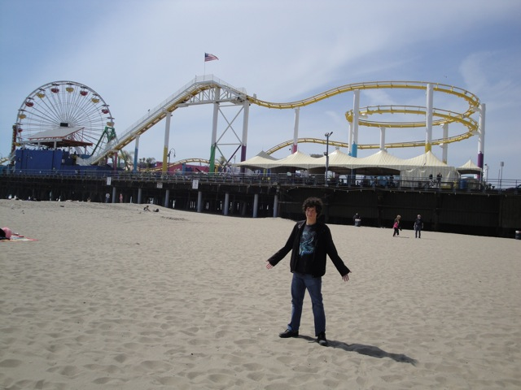

Spring Santa Monica Pier 2010
 Ok. Story Time. Spring Break started and I was bored. So I called Cody, and we ended up taking an excevation to the Santa Monica Pier.
Ok. Story Time. Spring Break started and I was bored. So I called Cody, and we ended up taking an excevation to the Santa Monica Pier.
Walking under the pier.
Yes world. Incrediblecoasters has indeed returned to the Santa Monica Pier to give it another chance.
 Today was mostly a filming day at the Santa Monica Pier, so you'll see a bunch of photos of Westcoaster.
Today was mostly a filming day at the Santa Monica Pier, so you'll see a bunch of photos of Westcoaster.

"Holy Crap. I can't believe it's actually open today unlike last time."
Damn! Pacific Plunge has grown since 2008.
Westcoaster had strange operations today. While at first, they had some of the worst operations at a park, when I got in line later, the operations got decent all of a sudden.
Ok. After riding the 2 person Top Spin, I don't care about Chao's removal. That more than makes up for it.
 Here's a nice shot of the Santa Monica Pier.
Here's a nice shot of the Santa Monica Pier.
 "Oh Boy!!! I've always wanted my name on a grain of rice!!!!"
"Oh Boy!!! I've always wanted my name on a grain of rice!!!!"
Another thing I've noticed since my last visit to the Santa Monica Pier is that they've added these Flying Saucers. They definetly seem like a good edition to the park.
 While I'm happy to see an improvement in operations, enthusiasm, rides, and funness at the Santa Monica Pier, I'm dissapointed to say that they still blow in the food department. Taco Bell should never be that expensive. (I ended up eating at a Taco Bell the next day and didn't even pay half of the Santa Monica Pier's price.)
While I'm happy to see an improvement in operations, enthusiasm, rides, and funness at the Santa Monica Pier, I'm dissapointed to say that they still blow in the food department. Taco Bell should never be that expensive. (I ended up eating at a Taco Bell the next day and didn't even pay half of the Santa Monica Pier's price.)
 That's enough filming. Let's ride a ride.
That's enough filming. Let's ride a ride.
Nerd Shot.
And people say that Terminator's station is cramped.
Up the lifthill we go.
 One thing that I really like about the Santa Monica Pier is that they haven't gotten on the POVaphobia bandwagon and still allow POVs. Way to go Santa Monica Pier. You get 2 thumbs up from Incrediblecoasters.
One thing that I really like about the Santa Monica Pier is that they haven't gotten on the POVaphobia bandwagon and still allow POVs. Way to go Santa Monica Pier. You get 2 thumbs up from Incrediblecoasters.
 Another good thing about today was that this was one of the best rides I ever got on Westcoaster.
Another good thing about today was that this was one of the best rides I ever got on Westcoaster.
There's actually some decent airtime right here.
 Westcoaster Madness!!!
Westcoaster Madness!!!
"This POV is totally worth posting on RCPro!!!"
 That airtime is actually pretty fun.
That airtime is actually pretty fun.
After glancing at this Mini Top Spin during my infamous last visit, I finally got on this thing, and let me tell you. THIS THING IS F*CKING INSANE!!!! I take back everything bad I said about it before.
"I'm gonna turn this thing into a Zipper."
Not only was the 2 person Top Spin amazing, but we got prizes just for riding. This ride alone is worth coming to the Santa Monica Pier for.
Here's the ghetto onride photo they have on the Ferris Wheel.
Al Gore (Not Pictured) and Mr. Red Stuffed Alligator approve of the solar powered ferris wheel.
While we didn't ride the Giant Frog Hopper today, we got some good photos of it from the Ferris Wheel.
If the sun burns out when we're at the top, we're pretty much screwed as we'll be stuck there. (Not to mention the freezing and the darkness.)
 Westcoaster from the Solar Powered Ferris Wheel.
Westcoaster from the Solar Powered Ferris Wheel.
Here you can see the airtime it has.
 And we finished the day at Big Deans Burger where we got a nice big meal at a cheaper price than the Santa Monica Pier Taco Bell.
And we finished the day at Big Deans Burger where we got a nice big meal at a cheaper price than the Santa Monica Pier Taco Bell.
Home